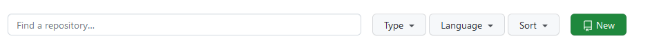
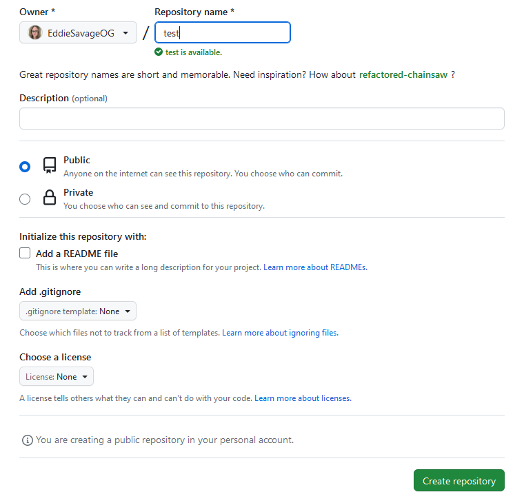
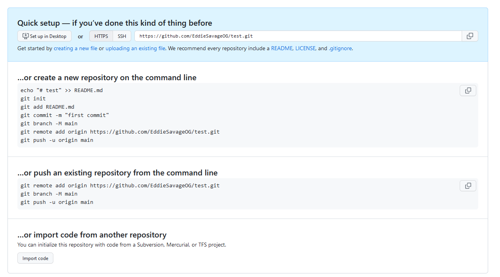

Welcome to Github, Kennedy!
Be kind on this webpage design, I'm whipping it up really quick, okay? :P
So, what is github?
In broad strokes, github is a subsidiary of Microsoft and is a cloud-based platform for storing, sharing, and managing code using Git.
What the heck is Git then!?
Once again, in broad strokes, Git is a distributed version control system typically used for coordinating coding work among programmers/developers. It stores code in "repositories" that have individual "branches" that can be "forked" (split into two branches) or "merged" (two branches merged together into one branch) in such a way that individual changes can be tracked and preserved. This is usually referred to as "version control" or "source control." It gets a lot more complicated than that, but suffice to say that this allows people to go back after changes were made to code and files and retrieve pre-altered code or to roll back entire changes to their previous state which can be extremely valuable and save a LOT of development time.
You can download git from here.
Using Git
There's a proper tutorial here and I definitely recommend going through it.
I'll be honest, I only learned about Git last year so I'm still getting the hang of it. I still have a post it note on my monitor that has my preferred git flow written on it and I'll share that flow with you.
It goes:
- git add .
- git status
- git commit -m "[comment]"
- git push
The explanation of those steps goes like:
- This command adds every changed file to the queue
- This command shows me the status of my queue - I like to verify that what I expect to see in there is actually in there
- This is how I add a comment to my commit - a little note to myself about what I did and what I still need to do
- This commits my changes to my repository
Connecting Your Repo to Github
This part can be a little bit tricky to begin with and sometimes I still go in circles myself.
So, your directory on your computer is called a "repository." Your directory on Github (or any other directory instance) is also called a "repository." The words "local" and "remote" are used to designate access to different locations. "Local" means that the repository is on the machine you are physically accessing in person - you can physically touch it. A "remote" machine is a machine you are accessing via the internet or an intranet through a "local" machine. A "remote" machine is one that you are not currently able to physically touch.
To connect your local repository to a remote repository, you need to make sure you have initialized a git repository on your machine. To do this, in the directory you would like to use as your git repository, you use the command "git init".
Once you've done that, you will connect it to your remote repository on github, which means first, you need to create that remote repository on Github by visiting github and choosing the green "new" button.
Choose your options on the next screen. The only one that's required is the Repository Name field.
You will now get a screen that gives you a list of commands to help you remember how to connect your local and remote repositories in case you forget - very helpful because I almost always forget this part.
Now on your command line, you can type:
- git remote add origin URL
- git branch -M main
- git remote -v
- git add .
- git status
- git commit -m "helpful comment for yourself goes here"
- git push
The function of these commands is:
- Connect your local and remote repositories together
- Connect your local and remote branches together
- Verify that your repositores are connected properly
- Add all changes to your queue
- Verify that your queue is correct
- Commit the changes to your queue with a helpful comment to yourself about what the changes are about
- Push those changes to the remote repository